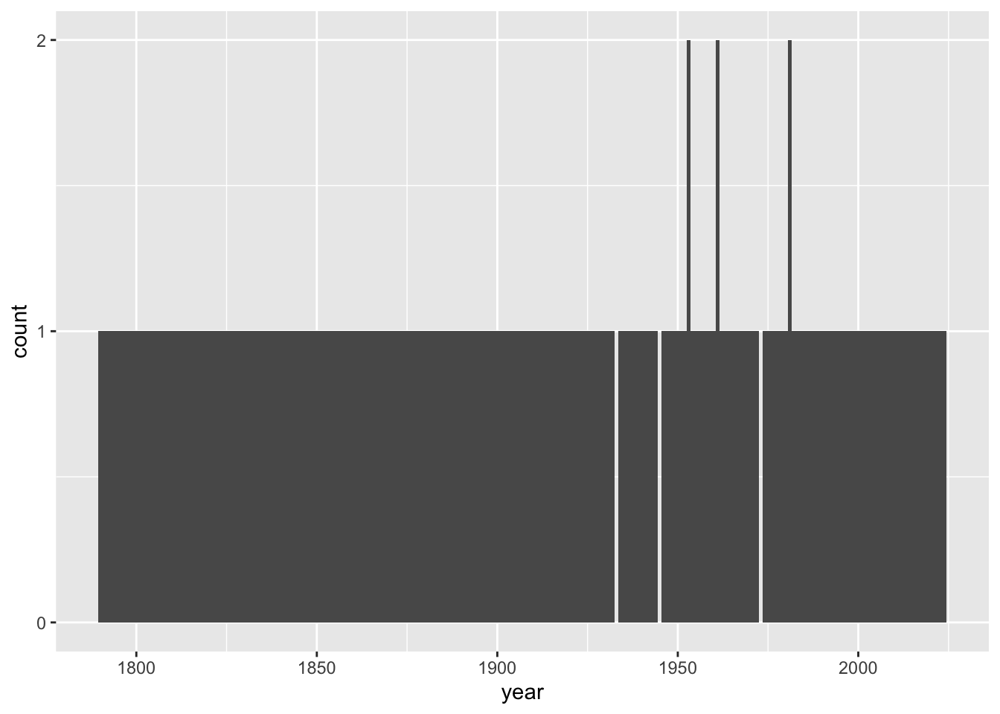
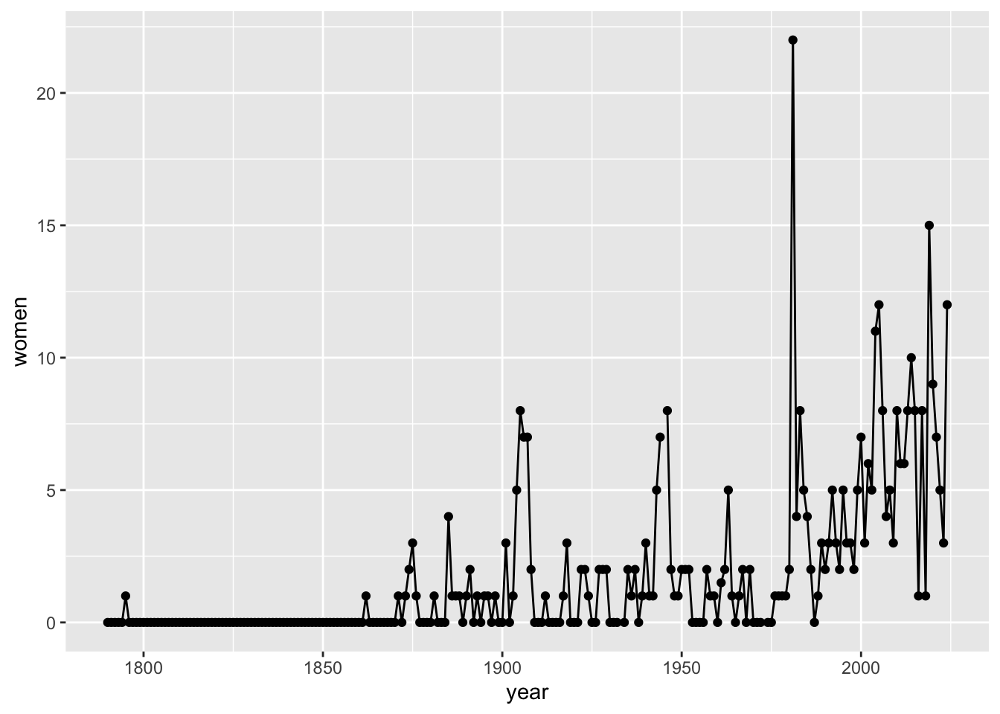
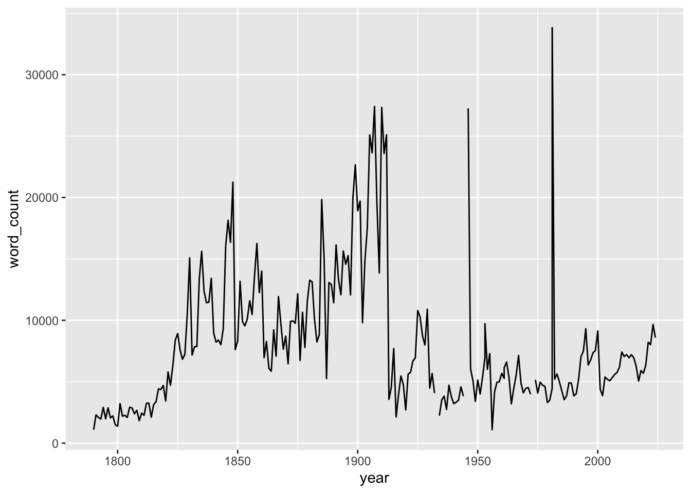
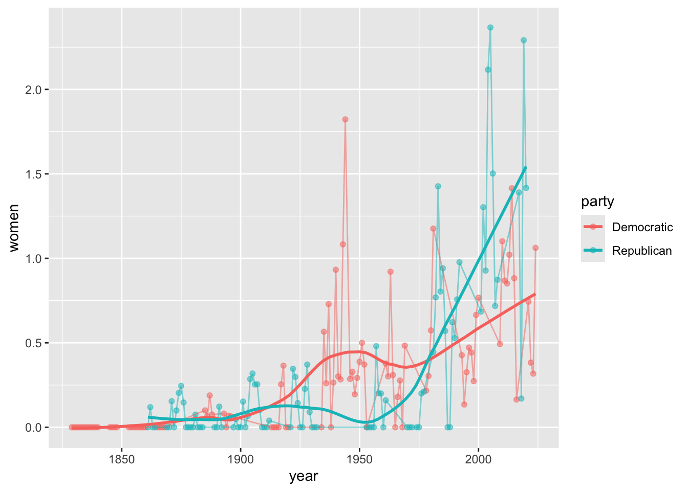
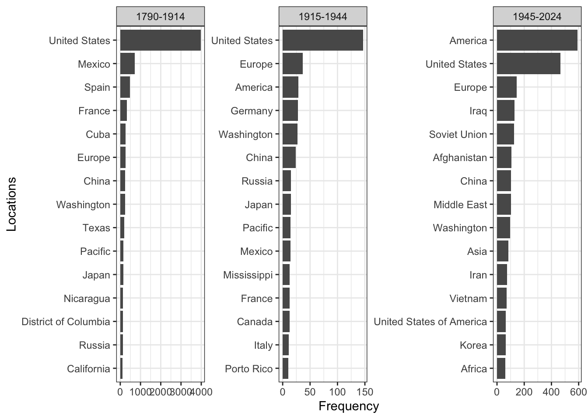

This assignment explores the State of the Union Addresses that the president of the United States delivers annually since 1790. Each of these speeches constitutes an important source of information about the US political agenda and the wider socio-economic and cultural context surrounding them.
As an illustration, please read the text included in the link below that records the address that Woodrow Wilson gave in December of 1913:
The full corpus contains 235 texts (the speeches delivered between 1790 and 2024; with a total of almost 1.7 million words). This information has been gathered together into a .csv file and can be downloaded here. Instead of columns, comma-separate (.csv) files separate the different pieces of information using commas as delimiters: name of the president delivering the speech (president), the year the speech was delivered (year) and the (whole) text of the speech itself (text). The first row displays the name of these variables and the remaining rows are devoted to each observation (speech) in the dataset.
We will use computational text analysis to shed light on the contents of these speeches, including how they have changed over time or how they differ between Democrat and Republican presidents.
Extract the information requested below and interpret your results. Present your analysis as a PDF file using Quarto and submit it via Blackboard (deadline: March 12).
Explore how the data set looks like. How many observations does it contain? What is the unit of analysis? What kind of information does it report about each observation? How many speeches do we have each year? Get familiar with the data set by using count() or its visual equivalents: ggplot() plus geom_bar() for qualitative dimensions or geom_histogram() for numerical variables.
Let’s imagine that we are interested in exploring the importance of terms referring to women in these speeches. Has this changed over time? Does the pattern change if we take into account that the length of the speeches may have also changed over time? Tip: Take into account that some years have 2 speeches, so you will need to make a decision of how to group them using group_by() and summarise().
Do the same with “education” as a topic. In order to do so, construct a dictionary of words related to education such as “education”, “school”, “student” and “teacher”, plus any other word you think might be also important.
Let’s now explore the role of political affiliation in the patterns we have observed so far: who mentions these terms more often, Democrat or Republican presidents? The problem is that our dataset does not have a column identifying which political party these presidents belonged to, so you have to construct it yourself. Tip: ask an AI tool for a list of presidents / party and merge it with our data set using full_join().
Going back to the topic of the presence (or absence) of women in the speeches, what is the context in which terms referring to women appear.
Which locations are mentioned more often? Does the geographical scope of the speeches change over time? What about political affiliation?
Warning: Some commands that may work well when interacting directly with Quarto may cause trouble when rendering, especially to pdf. For instance, the command View(data) opens up a RStudio data viewer in a different another tab, which is very useful for exploring how the data frame looks like but it may conflict with rendering since this additional tab cannot be rendered. If you want to show the reader how the data looks like just type the name of the object in a code chunk (potentially in combination with print() and perhaps also select() to only look into particular fields). Printing very long textual fields might also be problematic, so you may want to restrict the number of characters you want to print using, for instance, spstr_sub(1,200).
Solution
Let’s start by importing the data set and exploring how it looks like (as well as clearing the environment and loading the tidyverse package). Quarto documents do not need to set the working directory: it is automatically defined to the same folder the .qmd file is located (the root folder). Given that I have the file named sotu-texts.csv in the folder data-assign/sotu, the code below reads it into R.1 I also type the name of the newly created object data to inspect its contents.2
1 The function read_csv() forms part of the tidyverse, so it becomes available when you load the tidyverse. Defining the locale helps making sure the characters are properly encoded and recognised.
2 The symbol <- (called assignment operator) takes the object that read_csv() imports and stores it in the environment with the name you indicate (data in this case).
# A tibble: 235 × 3
president year text
<chr> <dbl> <chr>
1 Joseph R. Biden 2024 "\n[Before speaking, the President presented his prepa…
2 Joseph R. Biden 2023 "\nThe President. Mr. Speaker——\n[At this point, the P…
3 Joseph R. Biden 2022 "\nThe President. Thank you all very, very much. Thank…
4 Joseph R. Biden 2021 "\nThe President. Thank you. Thank you. Thank you. Goo…
5 Donald J. Trump 2020 "\nThe President. Thank you very much. Thank you. Than…
6 Donald J. Trump 2019 "\nThe President. Madam Speaker, Mr. Vice President, M…
7 Donald J. Trump 2018 "\nThe President. Mr. Speaker, Mr. Vice President, Mem…
8 Donald J. Trump 2017 "\nThank you very much. Mr. Speaker, Mr. Vice Presiden…
9 Barack Obama 2016 "\nThank you. Mr. Speaker, Mr. Vice President, Members…
10 Barack Obama 2015 "\nThe President. Mr. Speaker, Mr. Vice President, Mem…
# ℹ 225 more rows
This dataframe contains 235 rows (observations; referring to individual speeches) and 3 columns containing information about those speeches: the year and the president delivering each speech (year and president) and the text of the speech itself (text). The unit of analysis is therefore the speech. We could read the text of those speeches ourselves. The following for instance prints the first 200 characters from the speech from 2014,3 a relatively recent one. You could read a sample of them to have a sense of their contents and better ground your (computational) analysis.4
3 To (called a substring), we pass to From the package stringr, the function str_sub() extracts a part of a string. The numbers in the arguments indicate to extract from the first to the 200 character.
4 Note that the sequence “\\” is repeated though the text. These characters are newline characters that mark line breaks in the text, something that is encoded this way when text is stored in some data formats such as .csv files.
Show code
speech_2014 <- data |>filter(year==2014)speech_2014$text |>str_sub(1,200)
[1] "\nThe President. Mr. Speaker, Mr. Vice President, Members of Congress, my fellow Americans: Today in America, a teacher spent extra time with a student who needed it and did her part to lift America's "
Using count() on the field president gives us the number of speeches each president has delivered. These speeches take place annually, so the number we obtain also reflect the number of years those presidents occupied the White House. Note also that the result of implementing this function gives us a data frame (a tibble) with 43 rows. This is the number of unique categories contained in the field president, so it is the total number of (unique) presidents we have in the data set (each of them delivering a varying number of speeches).
Show code
data |>count(president)
# A tibble: 43 × 2
president n
<chr> <int>
1 Abraham Lincoln 4
2 Andrew Jackson 8
3 Andrew Johnson 4
4 Barack Obama 8
5 Benjamin Harrison 4
6 Calvin Coolidge 6
7 Chester A. Arthur 4
8 Donald J. Trump 4
9 Dwight D. Eisenhower 9
10 Franklin D. Roosevelt 11
# ℹ 33 more rows
We could also inspect the variable year. Let’s do it using a histogram. Note that binwidth is set to equal 1, so the width of the columns is exactly 1 year.5 Our expectation is to have one speech per year but as it shown below, there are years with two speeches. These are quite rare. We only have three years with 2 speeches. It seems also that there are a few blank years, meaning having no speech then.
5 The function scale_y_continuous() formats the ticks in the y-axis, so they make more sense (we don’t have 0.5 or 1.5 speeches in a year).
Show code
data |>ggplot(aes(x = year)) +geom_histogram(binwidth =1) +scale_y_continuous(breaks =seq(0, 2, 1))

What’s going on here? Let’s look at those years more in detail. First, we see some blanks in the plot above, which means that there are probable no speech those years. In practice, the data set does not have a row referring to those years. We could visually inspect a list of years to identify the missing ones (especially knowing that they are probably between 1930 and 1980). However, it might be useful to have one row for every possible year even if there is no speech that year, which it would imply leaving the other fields (president and text as missing values, NA). This is done with the function complete() indicating the column we are looking into and the range of years we are considering (the minimum and the maximum year is our period of study). We can then identify which years have missing information in the accompanying fields using filter(): 1933, 1945 and 1973. This might be because there was no speech that year or because this particular data set missed it (or misclassified it) for whatever reason. A bit of further research would clarify this (if there were speeches those years, we should add them to the data set but let’s assume everything is fine).
Show code
data <- data |>complete(year =1790:2024) data |>filter(is.na(president))
# A tibble: 3 × 3
year president text
<dbl> <chr> <chr>
1 1933 <NA> <NA>
2 1945 <NA> <NA>
3 1973 <NA> <NA>
Let’s now identify those years having more than one speech. We can do it by grouping speeches by year and then summing up how many we have each year. Identifying those years with 2 (or more) speeches would then be straightforward. It seems that occasionally outgoing and incoming Presidents have given successive State of the Union addresses within the same year, for instance Truman’s final message and Eisenhower’s first message in 1953.
Show code
data |>group_by(year) |>summarise(obs =n()) |>filter(obs>=2)
# A tibble: 3 × 2
year obs
<dbl> <int>
1 1953 2
2 1961 2
3 1981 2
Having years with multiple speeches will force us to make decisions when conducting analyses looking at change over time. We will talk about that below.
Let’s now explore the importance of terms referring to women in these speeches. The function str_count() computes the number of times that a particular pattern (sequence of characters) is found in the texts, so we can use it in combination to mutate() to create a column doing exactly that. The code below uses some basic regular expressions to detect both upper- and lower-case letters at the beginning of the term and an “a” or and “e” later on to capture both “woman” and “women”.6 Inspecting the revised data frame shows a column named women with these results.
6 This analysis could be done tokenising the data first, lemmatising and then identifying those lemmas that refer to women.
Show code
data <- data |>mutate(women =str_count(text, "[Ww]om[ae]n"))data
# A tibble: 238 × 4
year president text women
<dbl> <chr> <chr> <int>
1 1790 George Washington "\nFellow-Citizens of the Senate and House of … 0
2 1791 George Washington "\nFellow-Citizens of the Senate and House of … 0
3 1792 George Washington "\nFellow-Citizens of the Senate and House of … 0
4 1793 George Washington "\nFellow-Citizens of the Senate and House of … 0
5 1794 George Washington "\nFellow-Citizens of the Senate and House of … 0
6 1795 George Washington "\nFellow-Citizens of the Senate and House of … 1
7 1796 George Washington "\nFellow-Citizens of the Senate and House of … 0
8 1797 John Adams "\nGentlemen of the Senate and Gentlemen of th… 0
9 1798 John Adams "\nGentlemen of the Senate and Gentlemen of th… 0
10 1799 John Adams "\nGentlemen of the Senate and Gentlemen of th… 0
# ℹ 228 more rows
Note that the pattern used above “[Ww]om[ae]n” also captures things like “womanhood” and the like, which is something that may align well with whath we are doing here. We could nonetheless expand this analysis to include other terms explicitly referring to women, such as female/females, lady/ladies or girl/girls, or to their family positions, such as mother/mothers, wife/wives or daughter/daughters. Another option is to focus on pronouns (she, her, hers, herself),7 which would capture indirect references to women.8 You can either construct different columns and then sum the up or use the “or” operator (|) within str_count().9 We do the former because having different columns for each term may provide distinct information about the processes at play (it is not the same to refer to women as women than to refer to them as girls (or mothers). For simplicity, we only focus on three terms but the same pipeline could be easily extended and include other terms. Note we are also computing the total by just summing up those three columns.
7 Be careful though because the pattern “her” will capture many things, such such hereditary, herring, etc.
8 These references however could refer to particular women, not to women in general. In this regard, we could also look for female names using the function name_entity().
9 Something like this str_count(text, "[Ww]om[ae]|[Ff]emale|[Gg]irl").
Show code
data <- data |>mutate(women =str_count(text, "[Ww]om[ae]"),female =str_count(text, "[Ff]emale"),girl =str_count(text, "[Gg]irl"),total = women + female + girl)
We are now in a position to start tracing changes over time. In order not to over-complicate things, we are only going to plot the information contained in the column women depicting the other columns would be equivalent. Feel free to do it yourself.10 We should however take into account that some years have 2 speeches, so we need to make a decision of how to treat the information on those years, since we need to somewhat group them into just one single observation. We do using group_by() and summarise() to compute the average of the number of times women are mentioned in the speeches delivered that year,11 but another solution would have been to add up the mentions in both speeches.[So, we would type women = sum(women) instead.]
10 In fact, the lines for women and total track each other well, so it seems that the terms captured by “[Ww]om[ae]n” make up for most of the mentions to women.
11 That is, if one speech mentions women twice and the other mentions women four times, the average would be 3 times.
Show code
data |>group_by(year) |>summarise(women =mean(women)) |>ggplot(aes(x = year, y = women)) +geom_point() +geom_line()

The pattern observed above broadly corresponds to what the evolution of women’s status in society may look like: there are hardly any mention of women in the speeches during most of the 19th century. Although the term becomes a bit more visible during the 20th century, it is only during the last 20/25 years when we can see a clear incresing trend. There are a few outliers, for instance in the early 20th, the 1940s and the early 1980s, when particular speeches seem to have mentioned women more often than usual. It would be interesting to identify them and explore in which ways they were different.
Importantly, the number of times a particular term shows up in a speech might be related with the length of the text itself: longer speeches allow more opportunities to refer to women. It is therefore important to relativise the frequency measure by the length of the speech. The code below creates a new columns that counts the number of terms in a speech using a particular regular expression.12 We also plot the results to have a better idea of what is going on with this dimension: speeches grew in fact longer during throughout 19th century. Their length however was dramatically reduced (roughly) after WWI, with some remarkable exceptions, something which again would probably deserve further attention.
12 The pattern there searches for groups of alphanumeric characters without a space, punctuation or line break in between. An alternative would be “[\w]+”, which searches for a sequence of one or more word characters.
Show code
data <- data |>mutate(word_count =str_count(text, "[:alpha:]+"))data |>ggplot(aes(x = year, y = word_count)) +geom_line()

We can now construct a relativised measure of the frequency of women in these speeches. Do not forget to take into account that we have 2 speeches in some years first. Notice that our relative frequency is computed by dividing the absolute frequency (mentions of women) by the length of the speech (in words) and multiplied it 1,000 times, which means that our indicator measures the number of times women are mentioned per 1,000 words. It is useful to include this information in the graph itself. As well as dots and lines, we are also depicting the underlying trend behind the data using geom_smooth().13 The general pattern have not changed that much but the relative importance of particular years has sometimes.
13 We set the standard errors, se to FALSE to avoid plotting the confidence intervals, something we haven’t covered yet. Notice that the degree of smoothing can be adjusted with the argument span and assigning values between 0 and 1: lower values produce wigglier lines, thus better capturing short-term, instead of smoother, long-term, patterns. Set it, for instance, to span = 0.25 to see what happens.
We are now going to conduct a similar analysis and trace the temporal evolution of the importance of “education” as a topic. Given that there are many terms that can refer to education, we construct a dictionary of words, such as “school”, “student” or “teacher”, as well as “education” itself (feel free to add others you think might be also important). In order to do so, we create a data frame, a tibble, using the function tibble(). This data frame will have two columns, one named word and another one named dictionary. While the values of the first column are the words we are interested in (given in the form of a list),14 the values of the second columns are all the same (“educ”), meaning that these words refer to the topic education. We could have compared this to a different topic, such as health, so we could have created a dictionary with terms relating to health: doctor, nurse, medicine, etc. Always, make sure to check whether what you have done looks as it should be.
14 A list is a vector of values contained within c().
# A tibble: 4 × 2
word dictionary
<chr> <chr>
1 education educ
2 school educ
3 student educ
4 teacher educ
We could now try to find the number of times these terms should up in the speeches. Doing it directly however would miss terms like “teachers” or “schooling” or those starting with capital letters (“Education”). We could expand the list to cover all these possibilities but an easier solution is to tokenise the speeches first using unnest_tokens() from the tidytext package. As well as removing all punctuation and splitting the text into individual words, this function converts everything into lowercase characters, thus helping with one of the issues above. In addition, having the terms structured this way allows to easily lemmatise them (from the package textstem), so the others issues are also mitigated (“schooling” becomes “school”). The resulting data frame contains almost 1,9 million rows, that is, all the tokens that make up the corpus. Crucially, the meta data about the original speeches (year and president) is preserved, so we know which year and president delivered each of those words.
We can now join the two objects together, the tokenised version of the speeches and the dictionary with the words referring to the topic education, using full_join().15. Note that the columns that we want to join in both objects have the same name, which facilitates the matching because R recognises that is the only column with the same name in both objects.16
15 Using inner_join() instead removes any terms not present in the dictionary, which prevents computing relative frequencies (based on the total number of tokens in each speech) unless you compute that beforehand.
16 When the names are different, you could indicate the matching columns manually using the by argument: by = c("col1"="col2")).
Show code
data_token |>full_join(educ_dict)
# A tibble: 1,899,259 × 5
year president word lemma dictionary
<dbl> <chr> <chr> <chr> <chr>
1 1790 George Washington fellow fellow <NA>
2 1790 George Washington citizens citizen <NA>
3 1790 George Washington of of <NA>
4 1790 George Washington the the <NA>
5 1790 George Washington senate senate <NA>
6 1790 George Washington and and <NA>
7 1790 George Washington house house <NA>
8 1790 George Washington of of <NA>
9 1790 George Washington representatives representative <NA>
10 1790 George Washington i i <NA>
# ℹ 1,899,249 more rows
As evident above, this procedures adds the other columns of the object we are trying to merge to the original data frame. In this case, the other column in the object dict_educ was dictionary. R goes though all the terms in the tokenised version of the speeches and assign the value “educ” if the terms match and NA (missing) otherwise. In order to better work with this, it is better to create a dummy variable assigning 0s or 1s depending on whether the term was in the dictionary or not. Once that’s done, computing relative frequencies basically implies relying on what we already know to compute the number of occurrences per thousand words.17 We implement the full process below. Feel free to check what the code is doing sequentially:
17 We compute the number of tokens (rows) per year and the number of terms referring to education, so we can put these two pieces of information together. Note that, given that the columns educ is composed of 0s and 1s, this is equivalent to compute the average times 1,000: educ = mean(educ)*1000.
The results are interesting and correspond to the idea that the importance that governments placed on educating the population has increased over time, although the last years show a declining trend. We should also bear in mind that schooling was funded at the local and state level during a long time and it is only throughout the 20th century that the federal government started to intervene in education. Also, bear in mind that we have used only a few words as a dictionary of the topic education. This could be expanded to cover this topic more thoroughly. We should be careful when working with historical texts, since other terms might have been used in the past to refer to education (“pupil” instead of “student”, for instance) or we may have missed others that are used more often in recent times (such as “university”, “college”, “human capital”, “kindergarten”, etc. Integrating these terms probably makes the increasing trend even more pronounced. Likewise, you might be wondering whether the words in the object dict_educ should also be lemmatised: in our case they don’t need to be because they already constitute basic lemmas (check it yourself by applying the function lemmatize_words() to the words in the dictionary) but it might be necessary in other setting.
Let’s now explore the role of political affiliation in the patterns we have observed so far: who mentions these terms more often, Democrat or Republican presidents? The problem is that our data set does not have a column identifying which political party these presidents belonged to, so you have to construct it yourself. The idea is to have a data frame containing the names of the presidents we have and then attach information on their political affiliation. We could do the research and fill in the gaps ourselves. To gain time, we can outsource this task to a research assistant or now to an AI tool. Let’s first create a list with the presidents:
Show code
presidents <- data |>count(president) |>select(president)presidents
# A tibble: 44 × 1
president
<chr>
1 Abraham Lincoln
2 Andrew Jackson
3 Andrew Johnson
4 Barack Obama
5 Benjamin Harrison
6 Calvin Coolidge
7 Chester A. Arthur
8 Donald J. Trump
9 Dwight D. Eisenhower
10 Franklin D. Roosevelt
# ℹ 34 more rows
We can either export this object to a .csv file (that we will stored in the folder data) that we can feed into the AI or copy and paste the names directly into the AI agent.
Show code
write_csv(presidents, "data/presidents.csv")
The AI has done its part. We now have a revised file containing two columns: president and party (so we need to read it into R) or we have the information so we can create the object ourselves, copying and pasting the necessary information, as we have done below using the input from the AI. The agent also explained that it has included the following party labels: Federalist, Democratic-Republican, Democratic, Republican, Whig and None (for George Washington, who was not formally affiliated with a party). We should double-check that this classification is historically appropriate (and correct if necessary).
Show code
presidents <-tibble(president =c("Abraham Lincoln","Andrew Jackson","Andrew Johnson","Barack Obama","Benjamin Harrison","Calvin Coolidge","Chester A. Arthur","Donald J. Trump","Dwight D. Eisenhower","Franklin D. Roosevelt","Franklin Pierce","George Bush","George W. Bush","George Washington","Gerald R. Ford","Grover Cleveland","Harry S Truman","Herbert Hoover","James Buchanan","James K. Polk","James Madison","James Monroe","Jimmy Carter","John Adams","John F. Kennedy","John Quincy Adams","John Tyler","Joseph R. Biden","Lyndon B. Johnson","Martin Van Buren","Millard Fillmore","Richard M. Nixon","Ronald Reagan","Rutherford B. Hayes","Theodore Roosevelt","Thomas Jefferson","Ulysses S. Grant","Warren G. Harding","William Howard Taft","William J. Clinton","William McKinley","Woodrow Wilson","Zachary Taylor"),party =c("Republican","Democratic","Democratic","Democratic","Republican","Republican","Republican","Republican","Republican","Democratic","Democratic","Republican","Republican","None","Republican","Democratic","Democratic","Republican","Democratic","Democratic","Democratic-Republican","Democratic-Republican","Democratic","Federalist","Democratic","Democratic-Republican","Whig","Democratic","Democratic","Democratic","Whig","Republican","Republican","Republican","Republican","Democratic-Republican","Republican","Republican","Republican","Democratic","Republican","Democratic","Whig"))presidents
# A tibble: 43 × 2
president party
<chr> <chr>
1 Abraham Lincoln Republican
2 Andrew Jackson Democratic
3 Andrew Johnson Democratic
4 Barack Obama Democratic
5 Benjamin Harrison Republican
6 Calvin Coolidge Republican
7 Chester A. Arthur Republican
8 Donald J. Trump Republican
9 Dwight D. Eisenhower Republican
10 Franklin D. Roosevelt Democratic
# ℹ 33 more rows
I am going to assume that the list above is accurate. The next step is then to join this object to the original data using full_join(). The objects data and presidents both have a column named president, so the matching is straightforward:
Show code
data <- data |>full_join(presidents)data |>select(year, president, party, text)
# A tibble: 238 × 4
year president party text
<dbl> <chr> <chr> <chr>
1 1790 George Washington None "\nFellow-Citizens of the Senate and Hous…
2 1791 George Washington None "\nFellow-Citizens of the Senate and Hous…
3 1792 George Washington None "\nFellow-Citizens of the Senate and Hous…
4 1793 George Washington None "\nFellow-Citizens of the Senate and Hous…
5 1794 George Washington None "\nFellow-Citizens of the Senate and Hous…
6 1795 George Washington None "\nFellow-Citizens of the Senate and Hous…
7 1796 George Washington None "\nFellow-Citizens of the Senate and Hous…
8 1797 John Adams Federalist "\nGentlemen of the Senate and Gentlemen …
9 1798 John Adams Federalist "\nGentlemen of the Senate and Gentlemen …
10 1799 John Adams Federalist "\nGentlemen of the Senate and Gentlemen …
# ℹ 228 more rows
We can now proceed and implement the analysis recycling some of the code above. We can for instance re-do the process about the importance of topics related to education. Instead of grouping by year, we do it by party now. To make things simpler, we also restrict the analysis to president from the Republican or the Democratic parties.
# A tibble: 2 × 2
party educ
<chr> <dbl>
1 Democratic 0.629
2 Republican 0.590
Based on the terms chosen above, it seems that the presidents belonging to the Democratic party talk more about education than their peers in the Republican party but the difference is not very large. We could refine our analysis by checking whether these differences have always been there or are a relatively recent phenomenon (replicating the analysis but focusing, for instance, in the post-1945 period or even in more recent periods).
We could something similar for the term woman/women. The lemma for these two terms is women, so the code below captures both cases and plots the results.
Show code
data |>unnest_tokens(input = text, output = word) |>mutate(lemma =lemmatize_words(word)) |>mutate(women =if_else(lemma=="woman", 1, 0)) |>filter(party %in%c("Republican", "Democratic")) |>group_by(party, year) |>summarise(women =mean(women)*1000) |>ggplot(aes(x = year, y = women, col = party)) +geom_point(alpha =0.5) +geom_line(alpha =0.5) +geom_smooth(span =0.5, se =FALSE)

The most striking result is the increase in the number of times that Republicans have used the term “woman/en” from the 1950s onwards and clearly overcome the Democrats. Why? What is behind these trends?
The next question goes back to the topic of the presence (or absence) of women in the speeches and asks about the context surrounding the terms referring to women. This is a very interesting issue because it allows getting to know more about how these speeches are using these terms and therefore qualify the previous analysis based purely on term frequencies. The graphs above, for instance, show that Republican presidents are (increasingly) mentioning women more often than Democrats. But knowing the context in which they use those terms is crucial, right?
Instead of tokenising based on individual tokens (grams), this procedure implies tokenising but using (multiple) n-grams.18 In the example below, we are using a window of 5 tokens/grams, defined by the argument n = 5 (we have chosen the name window to the new column containing the 5-gram chunk). A wider window could obviously be more informative but bear in mind that the further away from the term of interest, the less likely to be informative about that particular term. In any case, you as a researchers is the one to make these decisions.
18 This could also be done using the package quanteda as explained in the keywords-in-contec (kwic) section in the “counting words” pdf.
Show code
data_5grams <- data |>select(year, president, party, text) |>unnest_tokens(window, text, token ="ngrams", n =5)data_5grams
# A tibble: 1,898,319 × 4
year president party window
<dbl> <chr> <chr> <chr>
1 1790 George Washington None fellow citizens of the senate
2 1790 George Washington None citizens of the senate and
3 1790 George Washington None of the senate and house
4 1790 George Washington None the senate and house of
5 1790 George Washington None senate and house of representatives
6 1790 George Washington None and house of representatives i
7 1790 George Washington None house of representatives i embrace
8 1790 George Washington None of representatives i embrace with
9 1790 George Washington None representatives i embrace with great
10 1790 George Washington None i embrace with great satisfaction
# ℹ 1,898,309 more rows
Once this is in place, we can identify whether those windows contain the term “[Ww]om[ae]n” (or any other pattern) or not. If they do, we can then easily list the accompanying terms. In order to do so, it is useful to first put the terms into separate columns using the function separate_wider_delim().
# A tibble: 1,898,319 × 8
year president party g1 g2 g3 g4 g5
<dbl> <chr> <chr> <chr> <chr> <chr> <chr> <chr>
1 1790 George Washington None fellow citizens of the sena…
2 1790 George Washington None citizens of the sena… and
3 1790 George Washington None of the sena… and house
4 1790 George Washington None the senate and house of
5 1790 George Washington None senate and house of repr…
6 1790 George Washington None and house of repr… i
7 1790 George Washington None house of repr… i embr…
8 1790 George Washington None of representati… i embr… with
9 1790 George Washington None representatives i embr… with great
10 1790 George Washington None i embrace with great sati…
# ℹ 1,898,309 more rows
Given that the 5-gram is a moving window, we can just focus on whether the term in question shows up in the middle gram (g3) to avoid duplicates. This gives us the chance to read the context in which the term women shows up, which is extremely informative. Note that the data frame is reduced to 391 rows, the number of times the terms “women” or “woman” are mentioned (out of almost 1,9 million tokens originally).
Show code
women <- data_5grams |>filter(g3=="women"| g3 =="woman")women
# A tibble: 391 × 8
year president party g1 g2 g3 g4 g5
<dbl> <chr> <chr> <chr> <chr> <chr> <chr> <chr>
1 1795 George Washington None of innoce… women and chil…
2 1862 Abraham Lincoln Republican indiscriminately men women and chil…
3 1871 Ulysses S. Grant Republican of men women and chil…
4 1873 Ulysses S. Grant Republican of americ… women marr… fore…
5 1874 Ulysses S. Grant Republican to chinese women hard… a
6 1874 Ulysses S. Grant Republican of americ… women who have
7 1875 Ulysses S. Grant Republican of americ… women who may
8 1875 Ulysses S. Grant Republican of chinese women but few
9 1875 Ulysses S. Grant Republican importation of women for ille…
10 1876 Ulysses S. Grant Republican of americ… women who may
# ℹ 381 more rows
We can now transform the data into a long form to facilitate the analysis. The column g3 is actually redundant because its value is always “women” (see code above), so we can drop it. We then put the values in the fields g1, g2, g4 and g5 (the terms placed next to the term women/woman) into a single column named order (or whatever you want) that will distinguish whether those terms come from g1, g2, g4 or g5, something that can be useful for the analysis if we want to differentiate regarding how close to g3 the terms are. The terms themselves and placed in a column automatically named value, which for convenience we rename to word.19 Lastly, we remove stop words that are not very informative.
19 Having the data structure in a long format (instead of a wide format) is more flexible because we can then easily structure our analyses based on the different categories there. pivot_longer(), which takes the values in the columns indicated there and puts them in a new column named order (or whatever name you prefer). The corresponding values for each category will be stored in a new column named value. Feel free to run this first step separately from the graph to understand what is happening to the original data frame.
Show code
women <- women |>select(-g3) |>pivot_longer(cols =c("g1", "g2", "g4", "g5"), names_to ="order") |>rename(word = value) |>anti_join(stop_words) women
# A tibble: 419 × 5
year president party order word
<dbl> <chr> <chr> <chr> <chr>
1 1795 George Washington None g2 innocent
2 1795 George Washington None g5 children
3 1862 Abraham Lincoln Republican g1 indiscriminately
4 1862 Abraham Lincoln Republican g5 children
5 1871 Ulysses S. Grant Republican g5 children
6 1873 Ulysses S. Grant Republican g2 american
7 1873 Ulysses S. Grant Republican g4 marrying
8 1873 Ulysses S. Grant Republican g5 foreigners
9 1874 Ulysses S. Grant Republican g2 chinese
10 1874 Ulysses S. Grant Republican g2 american
# ℹ 409 more rows
We can now find out which words are the most common ones when talking about women, by simply counting them. The list is very informative. Most of the times women are mentioned in the presidential speeches are in relation to terms denoting their role as mothers: children, pregnant, child, infants, etc. (you can use print(n = Inf) to see the whole list). As well as to the nation itself (american, america, america’s), there are also terms referring to work (employment, industry) and other topics/issues.
Show code
women |>count(word, sort=TRUE)
# A tibble: 283 × 2
word n
<chr> <int>
1 children 25
2 uniform 17
3 american 8
4 pregnant 7
5 child 6
6 act 5
7 america 5
8 law 5
9 serving 5
10 violence 5
# ℹ 273 more rows
You can also refine the analysis and perhaps focus only on the terms that are right next to women and see whether the same pattern shows up or not (having a wider window of terms would allow further analyses along these lines). Doing so, for instance, also highlights that women were often mentioned in the context of minorities (a word that also appeared relatively high in the previous list), such as “chinese” or “indian” women.
Show code
women |>filter(order=="g2"| order=="g4") |>count(word, sort=TRUE)
# A tibble: 96 × 2
word n
<chr> <int>
1 american 7
2 pregnant 6
3 act 5
4 named 4
5 serving 4
6 chinese 2
7 elderly 2
8 filled 2
9 indian 2
10 infants 2
# ℹ 86 more rows
Further analyses would look into how these patterns may have changed over time and whether these patterns are characteristic of particular presidents or political parties. Obviously, this is only a complementary tool to close-reading. Directly reading the context in which these terms were employed in the speeches would allow qualifying these analyses but just counting helps revealing patterns regarding the evolution of the perceived view of women in the mainstream political agenda and society more broadly, as well as the potential influence of particular historical processes (e.g. the suffrage movement, equal rights movements from the 1960s, etc.).
Note also that this assignment has so far focused on exploring particular topics (e.g. women, education). A more agnostic approach would search for the most common words in particular periods using top frequencies to discover other (perhaps) unnoticed patterns. This would involve unnesting tokens, removing stop words, lemmatizing and counting which tokens are most common.
Let’s finish this assignment by studying the locations that are mentioned in the speeches. Part of more general tagging tools, the package entity includes function for named entity recognition. One of them is location_entity() which identifies locations in a particular textual field (in our case the column text).20 Unfortunately, these tools do not work well with very long texts unless you change their default options. The code below fixes that by forcing the argument element.chunks to be at least equal to 1. Excluding those years without a speech also assures that missing values are not an issue. These functions are computationally intensive, so the code takes a while to run (be patient and I hope the computer does not crash).21
20 Other functions allow identifying persons (person_entity()) or organisations (organization_entity()).
21 If it crashes, you can always perform the analysis on a smaller subset of the corpus, filtering for instance to the last 25 years or something like that: filter(year>2000).
# A tibble: 235 × 5
year president party text locations
<dbl> <chr> <chr> <chr> <entity>
1 1790 George Washington None "\nFellow-Citizens of the Senat… <chr [7]>
2 1791 George Washington None "\nFellow-Citizens of the Senat… <chr>
3 1792 George Washington None "\nFellow-Citizens of the Senat… <chr>
4 1793 George Washington None "\nFellow-Citizens of the Senat… <chr>
5 1794 George Washington None "\nFellow-Citizens of the Senat… <chr>
6 1795 George Washington None "\nFellow-Citizens of the Senat… <chr>
7 1796 George Washington None "\nFellow-Citizens of the Senat… <chr>
8 1797 John Adams Federalist "\nGentlemen of the Senate and … <chr>
9 1798 John Adams Federalist "\nGentlemen of the Senate and … <chr>
10 1799 John Adams Federalist "\nGentlemen of the Senate and … <chr>
# ℹ 225 more rows
As you can see, the column locations is a vector listing whatever locations the algorithm has recognised. These vectors look something like this: c("Washington", "Ukraine"). You can for instance extract that information using pull() and pluck().22 The code below does it for the year 1805:
22pull() extracts the list and pluck(1) extracts the vector inside the list.
In order to work with the full corpus, we can use the function unnest() to structure that information as a regular tibble. This function expands a list-column (locations in our case), so that each element of the vectors inside it (each location) becomes its own row and preserved the associated metadata (year, president, party, etc.).
# A tibble: 18,698 × 4
year president party locations
<dbl> <chr> <chr> <chr>
1 1790 George Washington None North Carolina
2 1790 George Washington None United States
3 1790 George Washington None Providence
4 1790 George Washington None Virginia
5 1790 George Washington None United States
6 1790 George Washington None United States
7 1790 George Washington None United States
8 1791 George Washington None United States
9 1791 George Washington None United States
10 1791 George Washington None United States
# ℹ 18,688 more rows
We can now analyse this information. Let’s first explore how the the geographical scope of the speeches have changed over time. To make things simpler, we create four periods: 1790-1880, 1880-1914, 1915-1945 and 1946-2024. We can then count the number of times each location is mentioned within each period and select only the 15 most common using slice_max(). The code for the graph is a bit involved because we want to present the locations ordered in terms of popularity within each period. I would advise you to check what the code is doing sequentially. The results show how the geographical scope of the US political agenda has changed over time as the US themselves evolved from being especially focus on internal affairs to become a global power. A more fine-grain analysis (by decade for instance) would provide further insights.
Show code
library(tidytext)locations_long |>mutate(period =case_when( year<1914~"1790-1914", year>=1914& year<1945~"1915-1944", year>=1945~"1945-2024")) |>group_by(period) |>count(locations, sort=TRUE) |>slice_max(order_by = n, n =15) |>ggplot(aes(x =reorder_within(locations, n, period), y = n)) +geom_col() +scale_x_reordered() +coord_flip() +facet_wrap(~ period, nrow =1, scales ="free") +labs(x ="Locations", y ="Frequency") +theme_bw()

We can do something similar with political affiliation. The logic is the same but instead of grouping by year (or period) we group by party. To narrow down the temporal scope, we focus on the period after 1945 and we present the results as a table. The results are very interesting. One of the most important is how “Europe” ranks much higher for the Democrats. The Republicans also seem to be more concerned about the Middle East (also including Iraq, Iran and Afghanistan).
# A tibble: 15 × 5
rank locations_Democratic n_Democratic locations_Republican n_Republican
<int> <chr> <int> <chr> <int>
1 1 America 304 America 288
2 2 United States 278 United States 189
3 3 Europe 110 Iraq 96
4 4 Soviet Union 89 Middle East 54
5 5 China 76 Washington 51
6 6 Asia 64 Afghanistan 48
7 7 Afghanistan 57 Soviet Union 36
8 8 Vietnam 57 Europe 34
9 9 Iran 48 China 28
10 10 Middle East 48 Iran 27
11 11 Washington 46 United States of Am… 24
12 12 Korea 43 Earth 21
13 13 Africa 42 Korea 21
14 14 United States of America 41 Asia 19
15 15 Israel 40 Africa 18
This is just a first taste of how to extract and analyse the importance of geographical locations from textual corpuses. Note though that we have not taken into account whether there are differences in how the length of the speeches, either by period or by political affiliation, something that should be done before attaching too much significance to these findings. Also, we have focused on the most common locations but it might be also interesting to have a look at which ones are less common or even at the variety of locations that are mention (the number of unique locations can be computed using n_distinct()). Crucially, here we have reported the information about locations using graphs and tables. However, the best way to present spatial information is to draw maps. We will learn how to do it next session.
Well, this was quite a journey. Many more things could be done to enhance the analyses above but this is more than enough. Congrats if you have managed to somewhat perform these different exercises. As mentioned above, this way of approaching texts does not replace close reading but helps presenting evidence on a different way and find patterns that are not always visible, as well as the possibility of dealing with huge corpuses. Using these methods, as well as being creative about the way you treat the data, can indeed be a big methodological advantage for computationally-oriented historians.